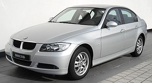

Quinta generación (E90-E91-E92-E93; 2004-2013)
El E90 es la quinta generación de la serie 3, la cual salió al mercado español en marzo de 2005, y se encuentra disponible en versión berlina (E90), familiar (E91), cupé (E92), y cabrio (E93). Fue completamente rediseñado a partir del E46, incluidos los cambios en los motores, la transmisión, el habitáculo, la suspensión, así como una serie de opciones y características de alta tecnología. El cupé / cabrio es ahora de diseño propio, y ya no deriva de la berlina, a diferencia de sus predecesores, siendo más largo y más estrecho que la berlina. Las principales características incluyen Acceso Confort, faros Bi-Xenón adaptativos, Active Cruise Control, y Dirección Activa. La línea recibió un lifting generacional mediados de 2009. Actualmente, se ofrecen cuatro opciones de motor, dos de ellas parte de la nueva serie 'N' de motores BMW n línea con una serie de nuevas tecnologías. Las innovaciones tecnológicas, como el uso de aleación de magnesio / aluminio, la bomba de agua eléctrica, el sistema Valvetronic (levantamiento selectivo de válvulas) o el doble VANOS contribuyen a conseguir un ligero aumento en el rendimiento con respecto a su predecesor, y al mismo tiempo un ahorro del 15% en combustible. La serie E9X de BMW también marca la vuelta a la turboalimentación con la introducción del BMW 335. El motor N54 produce 306 CV (224 kW) y 410 Nm de par. La serie E93 marca una gran primicia para BMW, el techo rígido retráctil. Las ventas del E90 han sido muy fuertes en Gran Bretaña. En 2007, un registro total de más de 58.000 vehículos fueron vendidos y es el séptimo más popular de coches en Gran Bretaña. Para el mercado de los EE. UU., los modelos 325i y 330i son alimentados por el mismo motor de 3,0 litros N52, pero el 330i cuenta con ciertas características del motor, software revisado y mejorado y sistemas de admisión y escape específicos para producir 40 CV más de potencia (255 vs 215). En el año 2007 se presenta el modelo serie 3 cupé (E92) con dos motores de actualización para los nuevos modelos 328i y 335i, que marcó un aumento en el poder frente a los anteriores y se convirtió en la oferta disponible para la serie 3 berlina al mismo tiempo. Canadá también recibió una berlina 323i que cuenta con un motor 2.5 gasolina y 200 CV (149 kW), el 323i carece de características y opciones disponibles para los más caros modelos Serie 3, como los faros de xenón, faros antiniebla, climatizador, y los asientos eléctricos ajustables.
Esta Serie (En España) cuenta con la siguiente gama de motores:
- 316i (122 CV, gasolina, 7.7 L/100 km)
- 318d (143 CV, diésel, 5.8 L/100 km)
- 318i (143 CV, gasolina, 7.6 L/100 km)
- 320d (163 CV inicialmente, 177 CV, diésel, 5.9 L/100 km, 184cv LCI)
- 320i (170 CV, gasolina, 7.6 L/100 km)
- 325i (218 CV, gasolina, 8.6 L/km)
- 325d (197 CV, diésel, 6.6 L/km)
- 330d (231 CV inicialmente, 245 CV actualmente, diésel, 6.7 L/km)
- 330i (258 CV, inicialmente, 272 CV actualmente, gasolina, 8.9 L/km)
- 335d (286 CV, diésel, 7.7 L/100 km)
- 335i (306 CV, gasolina, 9.8 L/100 km)
- M3 (420 CV, gasolina)
- M3 gts (450 CV, gasolina)
Cabe destacar que los siguientes motores pueden incorporar tracción total, conocida en BMW como xDrive, exceptuando la carrocería Cabrio ("E93") que no puede equiparla actualmente:
- 320d xDrive (320xd)
- 325i xDrive (325xi)
- 330d xDrive (330xd)
- 330i xDrive (330xi)
- 340i xDrive (335xi)
